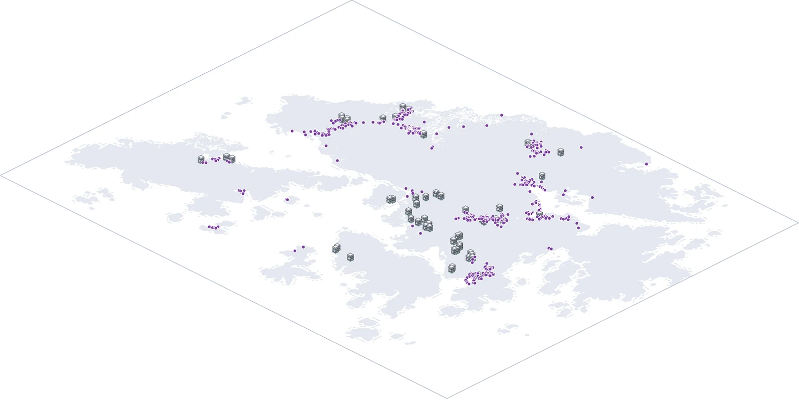
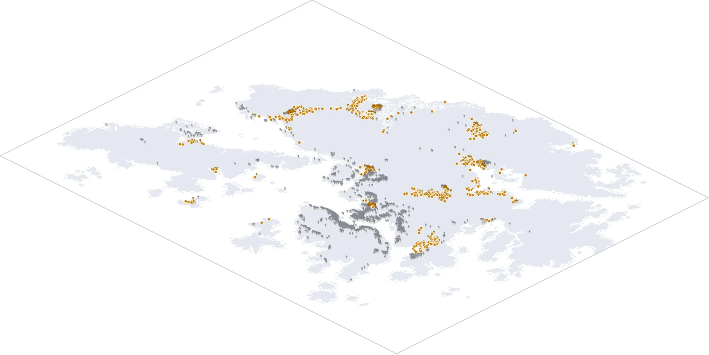
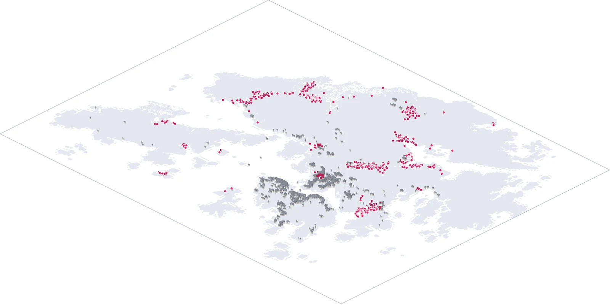
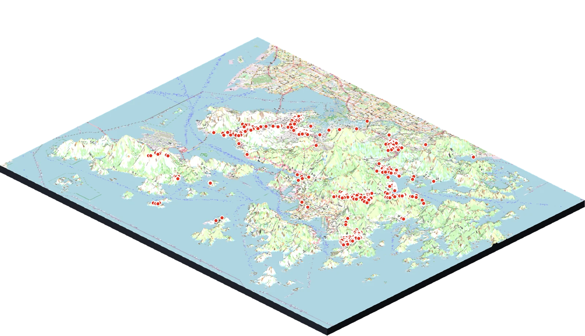

鐵路出入口
31.7%500米內錄有公共泊位
共 624 個出入口；彩線＝港鐵線路，淺灰線＝主要道路；圓圈＝出入口 500 米範圍（藍＝有泊位，灰＝沒有）；橙點＝泊位點

公共屋邨
40.4%500米內錄有公共泊位
共 245 個屋邨；每個房子＝屋邨的一座樓；橙屋頂＝500 米內有泊位（99 個屋邨），灰＝沒有；橙點＝泊位點

房委會商場
44.6%500米內錄有公共泊位
共 56 處；每棟灰色商場＝一個商場；紫色招牌＝500 米內有泊位（25 個商場），灰色招牌＝沒有；紫點＝泊位點

工商業樓宇
17.3%500米內錄有公共泊位
共 4,625 個地址；每個房子＝一座工商業樓；琥珀屋頂＝500 米內有泊位（802 個地址），灰＝沒有；琥珀點＝泊位點

樓齡50年以上住宅
17.7%500米內錄有公共泊位
共 9,205 個地址；每個房子＝一座舊樓；粉紅屋頂＝500 米內有泊位（1,625 個地址），灰＝沒有；粉紅點＝泊位點

公共單車泊位
515個點運輸署記錄的公共泊位地點
運輸署 515 個點；3D 地形底圖，紅點＝泊位點